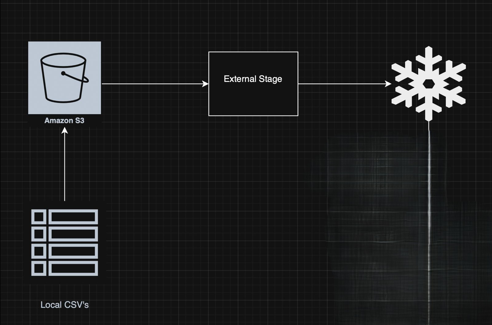
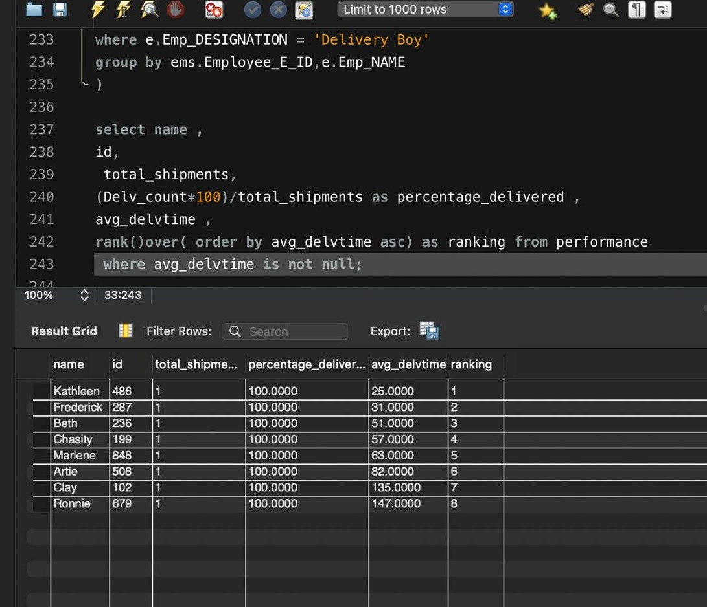
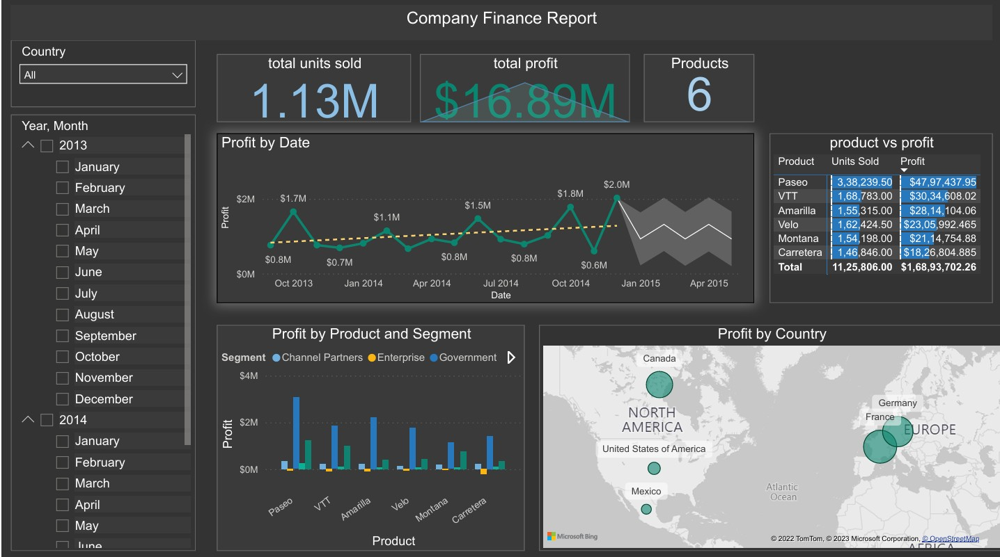
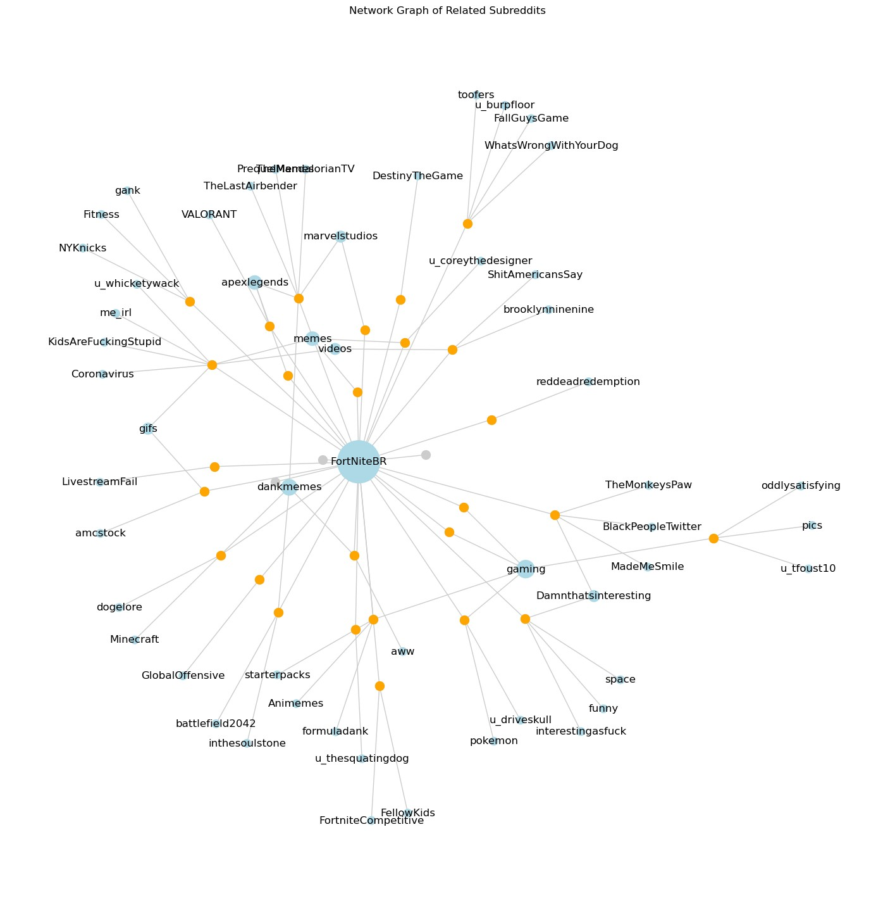

A production-grade Snowflake analytics pipeline built on the Olist Brazilian e-commerce dataset. The project implements both batch and continuous ingestion using external S3 stage and Snowpipe.
Raw data is cleansed and modelled into a star schema , enabling analysis of seller performance, delivery SLAs, revenue at risk, logistics costs, and regional supply-chain efficiency.
The solution includes enterprise-level data governance with role-based access control, row-level security, and dynamic data masking, alongside performance optimisations such as clustering and workload-specific warehouses.

This SQL project focuses on analysing logistics operations using structured relational data.The work involved cleaning and transforming raw logistics datasets by handling missing values, removing duplicates, standardising formats, and validating records related to shipments, goods, locations, and delivery timelines.
Using SQL, I designed and queried multiple tables to manage domestic and international logistics data, applying joins, subqueries, aggregations, and filtering to extract meaningful insights.
The project supports cost analysis, shipment tracking, and operational reporting

These projects showcase my Power BI work across two different datasets: sales data for a finance company and global COVID-19 data. Together, they demonstrate my ability to analyse complex datasets, build interactive dashboards, and present insights in a clear and meaningful way.
The finance project focuses on sales performance, profitability, and trends over time, supporting data-driven business decisions. The COVID-19 project explores global case trends, recoveries, deaths, and testing data, highlighting patterns across countries and continents through effective visual storytelling.

I built an interactive Sales Analysis dashboard in Excel for an online gifting platform to track order performance, customer behaviour, and revenue trends. The dashboard uses pivot tables, slicers, and charts to provide a consolidated view of sales activity across multiple dimensions.
Key Insights Included:
Total orders, total revenue, average spend, and delivery time
Revenue by occasion, product type and category,
Top cities by order value,
Monthly and hourly revenue trends.

Analysed public Reddit data to understand how Fortnite players interact online. Built user networks to identify influential members and used NLP sentiment analysis to classify discussions as positive, neutral, or negative. Delivered insights on community structure, trending themes, and toxic behaviour using Python, NetworkX, and machine-learning tools.